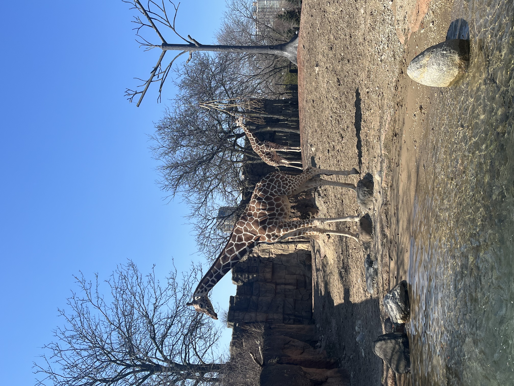
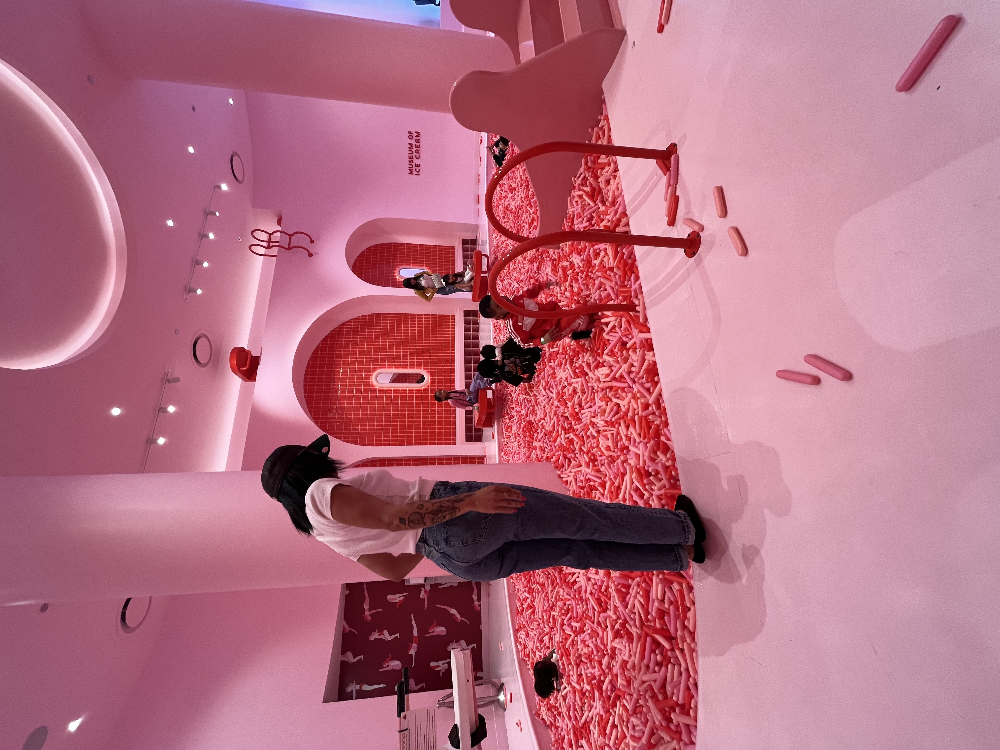
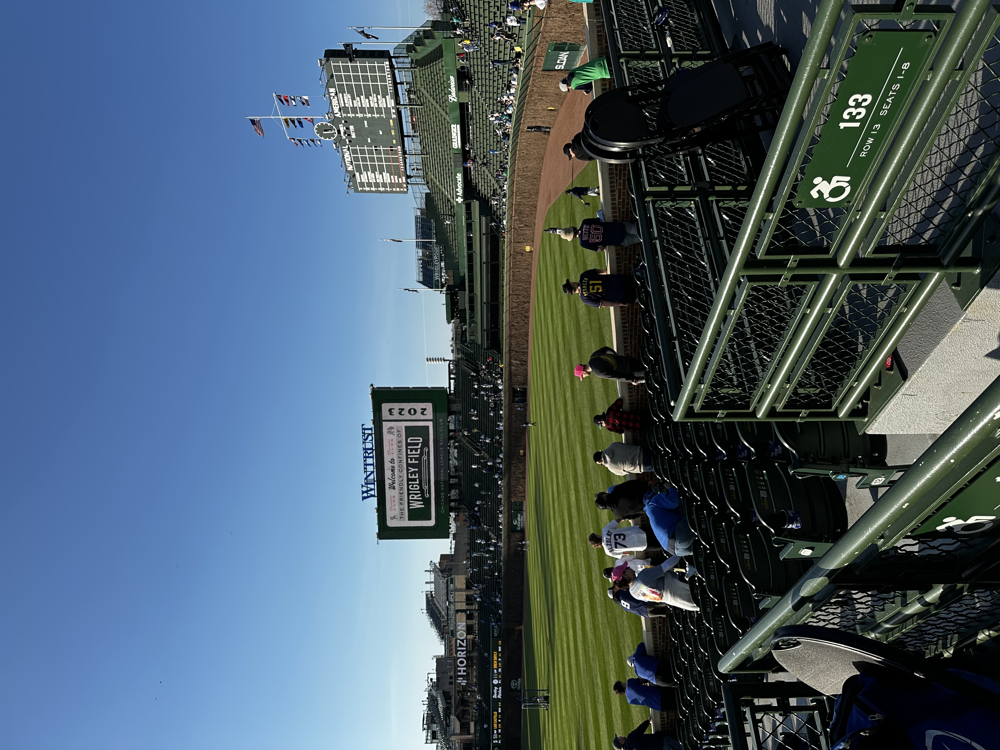

Welcome to my Chicago Recommendations
Chicago is one of the many cities I've visited that I would confidently move to. It's rich in history, has seasons similar to Seattle's, and sits centrally between the East Coast and the South. Last but certainly not least, there's a lot to do, see, and experience with a robust public transportation system to help you get around.
OH! I almost forgot to mention: there is no "Seattle Freeze" here. Locals are easy to talk to; they engage in conversation, exchange smiles on the street, and were quick to offer recommendations.
If you're ever in Chicago, here are my class appropriate and family-friendly recommended activities:
(These are in no particular order!)
- The Lincoln Park Zoo
- The Museum of Ice Cream
- The Bean
- Wrigley Field
The Lincoln Park Zoo

Johnny Navarro, Chicago, IL
The Lincoln Park Zoo was a great activity. It's free, which is a huge plus — nostalgic and reminiscent of childhood. It's also an effortless way to move your body, soak up some vitamin D, and continue learning about the planet and the species that call it home.
The Museum of Ice Cream

Johnny Navarro, Chicago, IL
The Museum of Ice Cream was easily my favorite activity on this trip. I am a girl who LOVES her sweet treats: cookies, candy, cake, ice cream, you name it, I love it. The museum offered free ice cream scoops throughout the self-guided walkthrough, historical information about ice cream, and interactive activities including mini golf, basketball, and a jelly bean-themed Connect Four. You even got a name tag to write your name as an ice cream flavor! I chose Cookies and Cream Chloe.
At the end of the museum, you could jump into their pit of sprinkles. That is me in the image, waiting my turn. I will say, they are not as soft as they appear. I actually attempted a cannonball and bounced pretty hard off of the surface.
The Bean
Chloe Jones, Chicago, IL
I don't have much to say about The Bean, unfortunately. It made for a great Instagram photo op, but other than that I wasn't very impressed. It's a very touristy Chicago staple, but go check it out anyway!
Wrigley Field

Chloe Jones, Chicago, IL
Where do I begin, Wrigley Field was my favorite activity from the trip. The field has an old, antiquated feel to it. The brick wall featured in the photo actually gets covered in greenery later in the season, which I thought was a nice touch. If it is your first time at the field, you can get a poster with your name and the date you visited signed by staff. The food isn't as good as T-Mobile Park's, but it wasn't horrible. I played it safe with a hot dog.